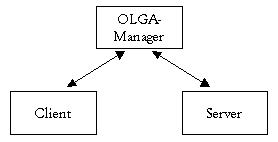
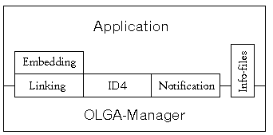
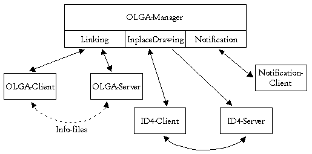

Das OLGA-Protokoll (Object Linking for GEM-Applications) wurde von Thomas Much entwickelt, und ermöglicht Object Linking auch unter GEM.
Da dieses Konzept vielleicht nicht allen Lesern bekannt ist, zunächst ein mögliches Anwendungsbeispiel: Stellen Sie sich vor, Sie benutzen Ihre Textverarbeitung und möchten ein Dokument durch eine Grafik etwas auflockern. Nachdem Sie die Grafik im Text plaziert haben, entscheiden Sie sich, diese noch geringfügig zu verändern. Normalerweise wechseln Sie dazu in das Grafikprogramm, nehmen dort die nötigen Änderungen vor, wechseln zurück in die Textverarbeitung, verwerfen die alte Grafik, importieren und plazieren die neue. Würden beide Applikationen (d.h. Grafikprogramm und Textverarbeitung) das OLGA-Protokoll unterstützen, könnte die Lösung dieser Aufgabe jedoch wie folgt aussehen: Sie wechseln in das Grafikprogramm, modifizieren dort die Grafik und nach dem Abspeichern sind Sie fertig! Die Textverarbeitung erkennt automatisch, daß die Grafik verändert wurde, und liest diese lebstständig ein!
Das obige Beispiel setzt dabei ein Multitasking-Betriebssystem wie MagiC oder MultiTOS voraus. Und in der Tat: Single-TOS-Systeme werden von OLGA nicht (mehr) unterstützt. Wer sich näher mit dem OLGA-Protokoll beschäftigen möchte, sollte die folgenden Punkte beachten:
OLGA arbeitet dokumentenzentriert, d.h. das Protokoll ist darauf vorbereitet, daß eine Applikation mehrere Dokumente (evtl. sogar mit komplett verschiedenen Datentypen) verwalten kann. Zur Steuerung des Object-Linkings wird ein sogenannter OLGA-Manager (kurz: Manager) eingesetzt. Die Kommunikation zwischen den Applikationen wird komplett über diesen Manager abgewickelt, vom dem es übrigens immer nur einen im System geben kann.
Das Bild zeigt eine einfach OLGA-Verbindung

Das eigentliche Object-Linking wird bei OLGA durch sogenannte Links realisiert: dies sind Referenzen des Clients auf Datenobjekte, oder genauer: Dateinamen mit absolutem Pfad. Wird nun vom Server ein Objekt geändert, auf das ein Link besteht, so wird der Client (vom Manager) davon unterrichtet, und kann das geänderte Objekt neu darstellen.
From Rev 1.2 (1996-11-20) onwards, extra functions were added and the OLGA architecture model now looks like this:

The above illustration shows the distribution of services between the OLGA-Manager and the applications using it (i.e. Client or Server). During linking, InplaceDrawing and Notification, the correct balance of communication between Manager and application for the embedding is the sole responsibility of the Client application.
Finally, the Info files are co-ordinated by the Manager but then operate directly between Server and Client applications. Schematically communications are handled something like this:

Querverweis: AV-Protokoll Drag&Drop-Protokoll
Initialisierung und Terminierung bei OLGA
Das OLGA-Protokoll entspricht dem OLE-Protokoll, welches Object Embedding mit OEP (Object Exchange Protocol) und Objekt Linking mit OLGA ermöglicht. Da es sehr sinnvoll sein kann, beide Varianten in einer Applikation zu unterstützen, werde beide Protokolle (d.h. OLGA und OEP) mit denselben Nachrichten evtl. gleichzeitig (!) initialisiert. Die notwendigen Routinen um sich an- bzw. abzumelden lauten:
Wie bereits erwähnt erfolgt die Kommunikation zwischen den OLGA-Applikationen über einen Manager, dessen AES-ID für den Nachrichtenaustausch ermittelt werden muss. Das Kochrezept hierzu lautet:
• Fall 1: Die Applikation benötigt OLE (d.h. OEP und OLGA)
| (a) | Den Manager per appl_find ("OLEMANGR") suchen. War die
Suche erfolgreich, so ist man bereits fertig.
|
| (b) | Ansonsten sollte man die Environmentvariable OLEMANAGER
inspizieren, die einen kompletten Zugriffspfad auf den Manager
enthalten kann. Aus diesem Pfad extrahiert man dann zunächst den
eigentlichen Programmnamen für appl_find, und geht dann wie unter (a)
beschrieben vor. Wenn auch dies nicht zum Erfolg führt, sollte man
das durch OLEMANAGER spezifizierte Programm per shel_write
nachstarten.
|
| (c) | Wenn alle bisherigen Anstrengungen nicht zum gewünschten
Ergebnis geführt haben, gibt es offenbar keinen OLE-Manager,
und man muss sich evtl. mit dem reinen OLGA-Protokoll begnügen. In diesem
Fall führt man analog zu (a) ein appl_find ("OLGA ")
und ein appl_- find ("OEP_SERV") aus; evtl. müssen
nämlich nun zwei Manager unterstützt werden!
|
| (d) | Sollte auch die letzte Aktion keinen Erfolg gebracht haben, so
sollten noch die Environmentvariablen OLGAMANAGER und OEPMANAGER (wie
unter (b)) ausgewertet werden.
|
• Fall 2: Die Applikation benötigt nur OLGA
In diesem Fall geht man wie unter dem ersten Punkt beschrieben vor, allerdings ändert sich die Reihenfolge der Aktionen zu (c),(d),(a) und (b). Natürlich brauchen OEP_SERV und OEPMANAGER in diesem Fall nicht abgefragt zu werden, da es unwahrscheinlich ist, dass ein OEP-Server das OLGA-Protokoll versteht.
Querverweis: OLGA-Protokoll AV-Protokoll Drag&Drop-Protokoll
Die folgenden Nachrichten können von einem OLGA-Client verschickt bzw. empfangen werden:
| • OLGA_CLOSEDOC | Schließen eines Dokumentes anzeigen. |
| • OLGA_GETINFO | Indexnummer für eine Info-Datei ermitteln. |
| • OLGA_LINK | Einbindung einer Datei in ein Dokument anzeigen. |
| • OLGA_LINKBROKEN | Referenz auf ein Objekt steht nicht mehr zur Verfügung. |
| • OLGA_LINKRENAMED | Referenz auf ein Objekt wurde aktualisiert. |
| • OLGA_OPENDOC | Dokument beim Manager anmelden. |
| • OLGA_RENAMELINK | Referenz auf ein Objekt aktualisieren. |
| • OLGA_START | Server für einen Client nachstarten. |
| • OLGA_UPDATED | Server hat eine Datei verändert. |
| • OLGA_UNLINK | Überwachung einer Datei beenden. |
Achtung: An dieser Stelle sei darauf hingewiesen, daß im Hinblick auf zukünftige Betriebssystem-Versionen zur Kommunikation zwischen verschiedenen Programmen benutzte oder über Zeiger zugewiesene Speicherbereiche global sein müssen (Mxalloc-Funktion mit Global-Flag). Andernfalls wird es beim Einsatz auf Rechnern mit PMMU (z.B. Atari-TT oder Falcon) zu Speicherschutzverletzungen kommen.
Querverweis: minimale Anforderungen OLGA-Protokoll OLGA-Server
Die folgenden Nachrichten können von einem OLGA-Server verschickt bzw. empfangen werden:
| • OLGA_BREAKLINK | Link auf ein Objekt aufheben. |
| • OLGA_INFO | Antwort auf eine OLGA_GETINFO-Nachricht. |
| • OLGA_RENAME | Namensänderung eines Objektes mitteilen. |
| • OLGA_UPDATE | Änderung an einem Objekt mitteilen. |
Achtung: An dieser Stelle sei darauf hingewiesen, daß im Hinblick auf zukünftige Betriebssystem-Versionen zur Kommunikation zwischen verschiedenen Programmen benutzte oder über Zeiger zugewiesene Speicherbereiche global sein müssen (Mxalloc-Funktion mit Global-Flag). Andernfalls wird es beim Einsatz auf Rechnern mit PMMU (z.B. Atari-TT oder Falcon) zu Speicherschutzverletzungen kommen.
Querverweis: minimale Anforderungen OLGA-Protokoll OLGA-Client
| Name: | »OLGA_BREAKLINK« - Link auf ein Objekt aufheben.
| ||||||||||||||||
| Nummer: | 0x1244
| ||||||||||||||||
| Beschreibung: | Diese Nachricht wird vom Server an den Manager geschickt wenn
er eine Datei löscht, oder anderweitig für den Client unbrauchbar
macht.
Hinweis: Der Manager informiert anschließend alle Clients, die einen Link auf diese Datei gesetzt hatten. Der Server erhält anschließend eine Antwort vom Manager, damit er sicher sein kann, das seine Absicht verstanden worden ist. | ||||||||||||||||
| Gruppe: | OLGA-Server
| ||||||||||||||||
| Querverweis: | OLGA_INFO OLGA_RENAME OLGA_UPDATE
|
Diese Nachricht erhält der Server als Antwort auf eine verschickte OLGA_BREAKLINK-Message:
Word 0 = OLGA_ACK (0x1239) Word 1 = apID Word 2 = 0 Word 3+4 = exakt dieselben Werte von OLGA_BREAKLINK Word 5 = 0 Word 6 = 0 Word 7 = OLGA_BREAKLINK
| Name: | »OLGA_INFO« - Antwort auf eine OLGA_GETINFO-Message.
| ||||||||||||||||
| Nummer: | 0x1248
| ||||||||||||||||
| Beschreibung: | Diese Nachricht ist als Antwort auf OLGA_GETINFO zu verstehen,
und wird vom Server direkt an den Client geschickt.
Hinweis: Vor dem Verschicken der Nachricht muss der Server evtl. die zugehörige Info-Datei aufbauen, sofern diese nicht bereits vorhanden ist. Ein Client darf sich jedoch nicht auf das Eintreffen dieser Antwort verlassen, denn der Server könnte ja inzwischen terminiert sein; außerdem darf er nur lesend auf die Datei zugreifen. Sobald der Client die Info-Datei wieder geschlossen hat, schickt er eine Antwort an den Server, damit dieser die Datei evtl. wieder löschen kann. | ||||||||||||||||
| Gruppe: | OLGA-Server
| ||||||||||||||||
| Querverweis: | OLGA_BREAKLINK OLGA_RENAME OLGA_UPDATE
|
Diese Nachricht erhält der Server als Antwort auf eine verschickte OLGA_INFO-Message:
Word 0 = OLGA_ACK (0x1239) Word 1 = apID Word 2 = 0 Word 3+4 = exakt dieselben Werte von OLGA_INFO Word 5 = Index-Nummer der Info-Datei Word 6 = 0 Word 7 = OLGA_INFO
| Name: | »OLGA_RENAME« - Namensänderung eines Objektes mitteilen.
| ||||||||||||||
| Nummer: | 0x123a
| ||||||||||||||
| Beschreibung: | Diese Nachricht wird vom Server an den Manager geschickt, falls
der Benutzer eine Datei im Server umbenannt oder verschoben hat. Es
gilt
Hinweis: Es liegt im Ermessen des Servers, ob er nach dem Befehl 'Speichern als...' diese Nachricht verschickt. Sinnvoll wäre dies auf jedenfall, wenn der Server die neue Pfadangabe bzw. den neuen Dateinamen für das Dokument übernimmt. Nach Möglichkeit sollten Links zwar immer nur für Dateien auf nicht wechselbaren Medien bestehen, in der Praxis dürfte dies aber wohl kaum durchzuhalten sein. Falls der Inhalt der Datei verändert wurde, muss zusätzlich noch die Nachricht OLGA_UPDATE verschickt werden. Der Server erhält anschließend eine Antwort, auf die er z.B. mit der Freigabe des alten Speicherplatzes reagieren kann. Die Bestätigung bedeutet übrigens nur, daß der Manager das Umbenennen weitergemeldet hat; reagiert ein Client nicht darauf, so ist der entsprechende Link tot, d.h. er kann nicht weiter überwacht werden! | ||||||||||||||
| Gruppe: | OLGA-Server
| ||||||||||||||
| Querverweis: | OLGA_BREAKLINK OLGA_INFO OLGA_UPDATE
|
Diese Nachricht erhält der Server als Antwort auf eine verschickte OLGA_RENAME-Message:
Word 0 = OLGA_ACK (0x1239) Word 1 = apID Word 2 = 0 Word 3+4 = exakt dieselben Werte von OLGA_RENAME Word 5+6 = exakt dieselben Werte von OLGA_RENAME Word 7 = OLGA_RENAME
| Name: | »OLGA_UPDATE« - Änderung an einem Objekt mitteilen.
| ||||||||||||||||||||||
| Nummer: | 0x1238
| ||||||||||||||||||||||
| Beschreibung: | Diese Nachricht muss vom Server an den Manager geschickt
werden, wenn er eine Datei abgespeichert hat.
Hinweis: Die Bearbeitung erfolgt z.Zt. nicht Case-Sensitiv, d.h. die Groß- bzw. Kleinschreibung des Dateinamens wird ignoriert, damit das Linking nicht an unterschiedlichen Benutzereingaben scheitert. Dies wird in späteren Versionen (Stichwort: alternative Dateisysteme) allerdings nicht mehr der Fall sein. Der Server erhält anschließend eine Antwort, auf die er z.B. mit der Freigabe des für den Dateinamen reservierten Speichers reagieren kann. | ||||||||||||||||||||||
| Gruppe: | OLGA-Server
| ||||||||||||||||||||||
| Querverweis: | OLGA_BREAKLINK OLGA_INFO OLGA_RENAME
|
Diese Nachricht erhält der Server als Antwort auf eine verschickte OLGA_UPDATE-Message:
Word 0 = OLGA_ACK (0x1239) Word 1 = apID Word 2 = 0 Word 3+4 = exakt dieselben Werte von OLGA_UPDATE Word 5 = 0 Word 6 = 0 Word 7 = OLGA_UPDATE
| Name: | »OLGA_CLOSEDOC« - Schließen eines Dokumentes anzeigen.
| ||||||||||||||||||
| Nummer: | 0x123c
| ||||||||||||||||||
| Beschreibung: | Diese Nachricht sollte vom Client an den OLGA-Manager geschickt
werden, wenn ein Dokument geschlossen wird.
Hinweis: Der Manager kann dann alle Links mit der entsprechenden Gruppennummer löschen. Dies könnte zwar auch mit einzelnen OLGA_UNLINK-Aufrufen realisiert werden, jedoch können so die Manager-Internen-Strukturen einfacher freigegeben werden. Die Nachricht darf beim Programmende nicht verwendet werden, da durch OLE_EXIT bereits alle nötigen Aktionen vorgenommen werden. Als Antwort erhält der Client eine einfache Bestätigung. | ||||||||||||||||||
| Gruppe: | OLGA-Client
| ||||||||||||||||||
| Querverweis: | OLGA_GETINFO OLGA_LINK OLGA_LINKBROKEN OLGA_OPENDOC
OLGA_LINKRENAMED OLGA_START OLGA_UPDATED OLGA_UNLINK
|
Diese Nachricht erhält ein Client als Antwort auf eine verschickte OLGA_CLOSEDOC-Message:
Word 0 = OLGA_ACK (0x1239) Word 1 = apID Word 2 = 0 Word 3 = 0 Word 4 = 0 Word 5 = Gruppenkennung des Dokumentes Word 6 = 0 Word 7 = OLGA_CLOSEDOC
| Name: | »OLGA_GETINFO« - Indexnummer für eine Info-Datei ermitteln.
| ||||||||||||||||||
| Nummer: | 0x1247
| ||||||||||||||||||
| Beschreibung: | Mit dieser Nachricht kann ein Client direkt beim Server eine
Index-Nummer für eine Info-Datei erfragen, wenn dieser eine solche
bei OLGA_UPDATE bekanntgegeben hat.
Hinweis: Nach dem Empfang dieser Nachricht kann der Server die entsprechende Datei aufbauen, sofern sie noch nicht vorhanden ist. Zu beachten ist außerdem, daß die übergebene Index-Nummer ungültig sein kann, und dann vom Server ignoriert werden muss. | ||||||||||||||||||
| Gruppe: | OLGA-Client
| ||||||||||||||||||
| Querverweis: | OLGA_CLOSEDOC OLGA_LINK OLGA_LINKBROKEN OLGA_OPENDOC
OLGA_LINKRENAMED OLGA_RENAMELINK OLGA_START OLGA_UPDATED
OLGA_UNLINK
|
| Name: | »OLGA_LINK« - Einbindung einer Datei in ein Dokument
anzeigen.
| ||||||||||||||||||
| Nummer: | 0x123d
| ||||||||||||||||||
| Beschreibung: | Diese Nachricht muss vom Client an den Manager geschickt
werden, wenn er eine Datei in eines seiner Dokumente eingebunden hat.
Hinweis: Wenn die angegebene Datei von einem OLGA-Server verändert wird (oder eine AV_PATH_UPDATE-Message von einem Programm empfangen wird, welches kein Server ist), erhält der Client eine entsprechende OLGA_UPDATED-Nachricht. Als Bestätigung erhalt der Client vom Manager eine entsprechende Antwort. | ||||||||||||||||||
| Gruppe: | OLGA-Client
| ||||||||||||||||||
| Querverweis: | OLGA_CLOSEDOC OLGA_GETINFO OLGA_LINKBROKEN
OLGA_LINKRENAMED OLGA_OPENDOC OLGA_RENAMELINK OLGA_START
OLGA_UPDATED OLGA_UNLINK
|
Diese Nachricht erhält ein Client als Antwort auf eine verschickte OLGA_LINK-Message:
Word 0 = OLGA_ACK (0x1239) Word 1 = apID Word 2 = 0 Word 3+4 = exakt dieselben Werte von OLGA_LINK Word 5 = Gruppenkennung des Dokumentes Word 6 = Fehler bei Wert 0, sonst Ok Word 7 = OLGA_LINK
| Name: | »OLGA_LINKBROKEN« - Referenz auf ein Objekt steht nicht mehr
zur Verfügung.
| ||||||||||||||||
| Nummer: | 0x1245
| ||||||||||||||||
| Beschreibung: | Diese Nachricht erhält der Client vom Manager, wenn ihm eine
Datei nicht mehr zur Verfügung steht (z.B. weil sie gelöscht wurde).
Hinweis: Der Client könnte daraufhin den Benutzer informieren, oder auch per Dateiauswahl eine andere Datei auswählen lassen. Außerdem sollte er den jetzt ungültigen Link mit einer OLGA_UNLINK-Nachricht auflösen lassen. | ||||||||||||||||
| Gruppe: | OLGA-Client
| ||||||||||||||||
| Querverweis: | OLGA_CLOSEDOC OLGA_GETINFO OLGA_LINK OLGA_LINKRENAMED
OLGA_OPENDOC OLGA_RENAMELINK OLGA_START OLGA_UPDATED
OLGA_UNLINK
|
| Name: | »OLGA_LINKRENAMED« - Referenz auf ein Objekt wurde
aktualisiert.
| ||||||||||||||
| Nummer: | 0x1241
| ||||||||||||||
| Beschreibung: | Diese Nachricht muss vom Client als Antwort auf eine
OLGA_RENAMELINK-Message an den Manager geschickt werden.
Hinweis: Unterbleibt diese Antwort, so ist der entsprechende Link tot, d.h. er kann nicht mehr überwacht werden, da im Manager ja noch der alte Name gespeichert ist. | ||||||||||||||
| Gruppe: | OLGA-Client
| ||||||||||||||
| Querverweis: | OLGA_CLOSEDOC OLGA_GETINFO OLGA_LINK OLGA_LINKBROKEN
OLGA_OPENDOC OLGA_RENAMELINK OLGA_START OLGA_UPDATED
OLGA_UNLINK
|
| Name: | »OLGA_OPENDOC« - Dokument beim Manager anmelden.
| ||||||||||||||||||
| Nummer: | 0x123b
| ||||||||||||||||||
| Beschreibung: | Diese Nachricht kann vom Client an den Manager geschickt
werden, wenn ein Dokument geöffnet worden ist.
Hinweis: Diese Nachricht dient z.Zt. nur zu Informationszwecken; die benötigten internen Strukturen werden vom Manager ansonsten beim Empfang der ersten OLGA_LINK Message angelegt. Die Gruppenkennung ist eine innerhalb des Clients eindeutige, und von diesem frei wählbare Zahl, mit der die Links innerhalb des Clients den Dokumenten zugeordnet werden können; sie sollte nach Möglichkeit stets angegeben werden. | ||||||||||||||||||
| Gruppe: | OLGA-Client
| ||||||||||||||||||
| Querverweis: | OLGA_CLOSEDOC OLGA_GETINFO OLGA_LINK OLGA_LINKBROKEN
OLGA_LINKRENAMED OLGA_RENAMELINK OLGA_START OLGA_UPDATED
OLGA_UNLINK
|
| Name: | »OLGA_RENAMELINK« - Referenz auf ein Objekt aktualisieren.
| ||||||||||||||
| Nummer: | 0x1240
| ||||||||||||||
| Beschreibung: | Diese Nachricht erhält der Client vom Manager, wenn der Server
eine Datei (auf die ein Link gesetzt ist) umbenannt oder verschoben
hat.
Hinweis: Diese Nachricht soll den Client nur anweisen, seine interne Referenz zu aktualisieren; das Dokument muss nicht neu gezeichnet werden. Der Zeiger auf den neuen Namen ist übrigens solange gültig, wie der Link besteht. Als Antwort auf diese Nachricht muss der Client eine OLGA_LINKRENAMED-Message an den Manager schicken, damit dieser seine Referenz aktualisieren, und unnötigen Speicherplatz freigeben kann. | ||||||||||||||
| Gruppe: | OLGA-Client
| ||||||||||||||
| Querverweis: | OLGA_CLOSEDOC OLGA_GETINFO OLGA_LINK OLGA_LINKBROKEN
OLGA_LINKRENAMED OLGA_OPENDOC OLGA_START OLGA_UPDATED
OLGA_UNLINK
|
| Name: | »OLGA_START« - Server für einen Client nachstarten.
| ||||||||||||||||||||||
| Nummer: | 0x1246
| ||||||||||||||||||||||
| Beschreibung: | Mit dieser Nachricht kann ein Client einen für sich passenden
Server nachstarten lassen.
Hinweis: Um das Programm zu starten wird (bei OLS_TYPE und OLS_EXTENSION) die Konfigurations-Datei 'olga.inf' ausgewertet. Zunächst wird der darin gefundene Server im Speicher gesucht, und bei Erfolg mit VA_START aufgerufen. Anderenfalls wird das Programm in einer Multitaskingumgebung wie MagiC oder MultiTOS per shel_write nachgestartet. Als Bestätigung erhält man eine einfache Antwort, sowie eine weitere Nachricht, um die Kommandozeile leichter freigeben zu können (falls diese nicht NULL war). | ||||||||||||||||||||||
| Gruppe: | OLGA-Client
| ||||||||||||||||||||||
| Querverweis: | OLGA_CLOSEDOC OLGA_GETINFO OLGA_LINK OLGA_LINKBROKEN
OLGA_LINKRENAMED OLGA_OPENDOC OLGA_RENAMELINK OLGA_UPDATED
OLGA_UNLINK
|
Diese Nachricht erhält der Client als Antwort auf eine verschickte OLGA_START-Message:
Word 0 = OLGA_ACK (0x1239) Word 1 = apID Word 2 = 0 Word 3 = OLS-Konstante von OLGA_START Word 4+5 = exakt dieselben Werte von OLGA_START Word 6 = Fehler (bei Wert 0), sonst ok Word 7 = OLGA_START
Diese Nachricht erhält der Client als Antwort auf eine verschickte OLGA_START-Message:
Word 0 = OLGA_ACK (0x1239) Word 1 = apID Word 2 = 0 Word 3 = 0 (!) Word 4+5 = exakt dieselben Werte von OLGA_START [6]+[7] Word 6 = Fehler (bei Wert 0), sonst ok Word 7 = OLGA_START
OLS_TYPE (0x0001): Word[4] = 0. In Word[5] steht ein XAcc-Programmtyp.
OLS_EXTENSION (0x0002): In Word[4,5] steht eine Extension (z.B. ".GEM").
OLS_NAME (0x0003): In Word[4,5] steht ein Zeiger auf den absoluten Dateinamen der zu startenden Applikation.
| Name: | »OLGA_UPDATED« - Server hat eine Datei verändert.
| ||||||||||||||||||
| Nummer: | 0x123f
| ||||||||||||||||||
| Beschreibung: | Diese Nachricht erhält der Client vom Manager, wenn der Server
eine Datei, auf die ein Link gesetzt ist, verän- dert hat.
Hinweis: Wenn der Client diese Nachricht empfängt, sollte er also das zugehörige Dokument neu anzeigen. Der Zeiger ist übrigens solange gültig, wie der Link besteht. Die Kennung des Servers (Word 6) ist garantiert gesetzt, falls Word 5 einen Wert ungleich 0 besitzt. An diese ID (d.h. direkt an den Server) kann dann eine OLGA_GETINFO Nachricht geschickt werden. | ||||||||||||||||||
| Gruppe: | OLGA-Client
| ||||||||||||||||||
| Querverweis: | OLGA_CLOSEDOC OLGA_GETINFO OLGA_LINK OLGA_LINKBROKEN
OLGA_LINKRENAMED OLGA_OPENDOC OLGA_RENAMELINK OLGA_START
OLGA_UNLINK
|
| Name: | »OLGA_UNLINK« - Überwachung einer Datei beenden.
| ||||||||||||||||||||
| Nummer: | 0x123e
| ||||||||||||||||||||
| Beschreibung: | Diese Nachricht muss vom Client an den Manager geschickt
werden, wenn die Überwachung einer bestimmten Datei ein- gestellt
werden soll.
Hinweis: Falls das Dokument geschlossen wird, sollte stattdessen OLGA_CLOSEDOC verwendet werden. Wenn der Client terminiert, werden per OLE_EXIT alle entsprechenden Links automatisch gelöscht. Der angegebene Dateiname muss exakt mit der bei OLGA_LINK übergebenen Zeichenkette übereinstimmen. Als Bestätigung erhält der Client eine passende Antwort. | ||||||||||||||||||||
| Gruppe: | OLGA-Client
| ||||||||||||||||||||
| Querverweis: | OLGA_CLOSEDOC OLGA_GETINFO OLGA_LINK OLGA_LINKBROKEN
OLGA_LINKRENAMED OLGA_OPENDOC OLGA_RENAMELINK OLGA_START
OLGA_UPDATED
|
Diese Nachricht erhält ein Client als Antwort auf eine verschickte OLGA_UNLINK-Message:
Word 0 = OLGA_ACK (0x1239) Word 1 = apID Word 2 = 0 Word 3+4 = exakt dieselben Werte von OLGA_UNLINK Word 5 = Gruppenkennung des Dokumentes Word 6 = Fehler bei Wert 0, sonst Ok Word 7 = OLGA_UNLINK
Ein OLGA-Server muss wenigstens folgendes tun:
Ein OLGA-Client muss wenigstens folgendes tun:
| Name: | »OLE_EXIT« - Aus dem Protokoll ausklinken.
| ||||||||
| Nummer: | 0x4951
| ||||||||
| Beschreibung: | Diese Nachricht sollte bei Programmende an den Manager
geschickt werden.
Hinweis: Die Nachricht wird außerdem vom Manager an die Applikationen geschickt, wenn dieser terminiert. Wenn sich ein OLGA-Client beim Manager abmeldet, werden automatisch alle zugehörigen Links und Documents gelöscht. | ||||||||
| Gruppe: | OLGA-Initialisierung
| ||||||||
| Querverweis: | OLE_INIT OLE_NEW OLGA_INIT
|
| Name: | »OLE_INIT« - Applikation beim Manager anmelden.
| ||||||||||||||||||||||||||||||||||||||||||||||||||||||||
| Nummer: | 0x4950
| ||||||||||||||||||||||||||||||||||||||||||||||||||||||||
| Beschreibung: | Diese Nachricht muss an den OLGA-Manager geschickt werden, und
sorgt dafür, daß die betreffende Applikation dem Manager bekannt
wird.
Hinweis: Wenn ein Protokoll von der Applikation nicht unterstützt wird, sind die Wörter 3 und 4 bzw. 5 und 6 auszunullen. Je nach Protokollauswahl erhält man dann vom Manager eine OEP_CONFIG und/oder eine OLGA_INIT-Message; es ist dann nach den Beschreibungen des jeweiligen Protokolls fortzufahren. | ||||||||||||||||||||||||||||||||||||||||||||||||||||||||
| Gruppe: | OLGA-Initialisierung
| ||||||||||||||||||||||||||||||||||||||||||||||||||||||||
| Querverweis: | OLE_EXIT OLE_NEW OLGA_INIT
|
| Name: | »OLE_NEW« - Manager wurde nachgestartet.
| ||||||||||||||||||||||||||||
| Nummer: | 0x4952
| ||||||||||||||||||||||||||||
| Beschreibung: | Diese Nachricht wird vom Manager an alle erreichbaren Applikationen
verschickt, wenn er nachgestartet worden ist.
Nach Empfang und Auswertung dieser Message sollte eine Applikation die Nachricht OLE_INIT verschicken, um sich beim Manager anzumelden. Achtung: Die Werte in dieser Nachricht ersetzen nicht die Rückgabe von OEP_CONFIG bzw. von OLGA_INIT, sie dienen nur zu Informationszwecken. | ||||||||||||||||||||||||||||
| Gruppe: | OLGA-Initialisierung
| ||||||||||||||||||||||||||||
| Querverweis: | OLE_EXIT OLE_INIT OLGA_INIT
|
| Name: | »OLGA_INIT« - Bestätigung für Anmeldung per OLE_INIT.
| ||||||||||||||||||||||||||
| Nummer: | 0x1236
| ||||||||||||||||||||||||||
| Beschreibung: | Diese Nachricht wird als Antwort auf eine OLE_INIT-Message
verschickt.
Hinweis: Applikationen sollten den OLGA-Mechanismus erst verwenden, nachdem sie diese Nachricht erhalten haben, und diese keinen Fehler signalisiert hat. Ausnahme: Bei Programmen, die bereits während der Startphase Dokumente öffnen, kann es sinnvoll sein, auch ohne Empfang dieser Nachricht das Protokoll zu benutzen; allerdings sollten bei der Applikation dann keine Fehler auftreten, falls sich der Manager doch nicht meldet. | ||||||||||||||||||||||||||
| Gruppe: | OLGA-Initialisierung
| ||||||||||||||||||||||||||
| Querverweis: | OLE_EXIT OLE_INIT OLE_NEW
|
Das OLGA-Protokoll ermöglicht den Austausch von speziellen Informationen zwischen Client und Server durch sogenannte Info-Dateien. Diese Dateien beinhalten zwei Arten von Datenstrukturen:
Die Info-Dateien selbst sind dabei folgendermaßen aufgebaut:
InfHeader BlockHeader 1 Daten 1 BlockHeader 2 Daten 2 ... ... BlockHeader n-1 Daten n-1 BlockHeader n (id=0)
Das Dateiende (bzw. Block n) wird durch eine ID mit dem Wert 0 gekennzeichnet. Einige Block-ID's sind bereits fest definiert. Im einzelnen:
| ID | Bedeutung |
| 'AUTH' | Autor: Die Codierung entspricht dabei 'REM' |
| (s.u.). Allerdings sollte man sich auf eine | |
| einzige Zeile beschränken. | |
| 'DATE' | Datum der letzten Änderung als DOSTIME-Struktur. |
| 'KEYW' | Stichworte: Die Codierung entspricht dabei 'REM' |
| (s.u.). Innerhalb der Zeilen liegen die Stich- | |
| worte durch Kommata getrennt vor. | |
| 'REM ' | Kommentar: Einzelne Zeilen sind null-terminiert, |
| das Ende wird über die Länge erkannt. Somit kön- | |
| nen auch Leerzeilen verschickt werden. | |
| 0x00000000 | Dateiende: Die Komponente length der OLGABlockHeader |
| Struktur sollte also den Wert 0 besitzen. |
Achtung: Damit ist natürlich noch überhaupt nicht festgelegt, welche Blöcke (und in welcher Reihenfolge) tatsächlich gespeichert werden. Unbekannte Blöcke müssen daher ignoriert (d.h. überlesen) werden. Neue Block-ID's können frei definiert werden; damit es aber nicht zu Kollisionen mit bereits bestehenden ID's kommt, sollten Programmierer besser vorher mit dem OLGA-Entwickler Kontakt aufnehmen.
Querverweis: OLGA-Protokoll OLGA-Client OLGA-Server
typedef struct
{
LONG magic; /* Kennung: 'OLGA' */
WORD version; /* Versionsnummer (z.Zt. 0x0100) */
WORD skip; /* Anzahl der folgenden Headerbytes, */
/* die überlesen werden müssen. */
} OLGAInfHeader;
typedef struct
{
LONG id; /* Block-ID */
LONG length; /* Anzahl der folgenden Datenbytes */
} OLGABlockHeader;
Thomas Much
Gerwigstraße 46
D-76131 Karlsruhe Fax: (0721) 622821
E-Mail: Thomas.Much@stud.uni-karlsruhe.de (Internet)
http://www.uni-karlsruhe.de/ Thomas.Much (WorldWideWeb)
OL_SERVER (0x0001):
Die Applikation ist ein OLGA-Server.
OL_CLIENT (0x0002):
Die Applikation ist ein OLGA-Client.
OL_PEER (0x0003):
Die Applikation ist ein Client und Server.
OL_PIPES (0x1000):
Die Applikation möchte nicht über Zeiger, sondern über
MultiTOS-kompatible Drag&Drop- Pipes kommunizieren.
Der Manager informiert dann, ob er diese Art der Kommunikation versteht bzw. ob sie auf dem aktuellen System möglich ist. Z.Zt. wird diese Form jedoch noch nicht unterstützt.
OL_START (0x2000):
Der Manager kann OLGA_START ausführen.
OL_MANAGER (0x4000):
Die Applikation ist ein OLGA-Manager.
OL_OEP (0x0001):
Die Applikation versteht OEP.